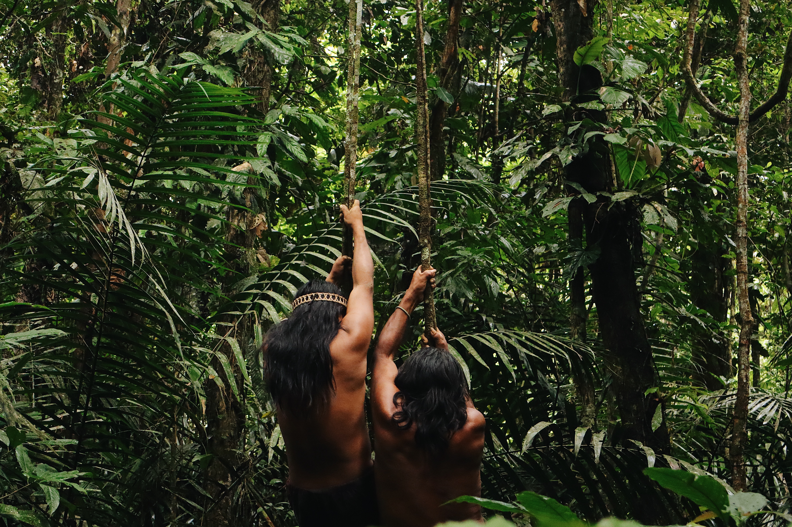

Gaia Zavatti · UI/UX Design · 2026
Archivio fotografico:
Cecilia Seregni
Una raccolta di sei serie fotografiche indipendenti organizzata per consentire una navigazione pura, ridotta all’essenziale. Le fotografie di un’amica si trasformano in un sistema di esplorazione d’archivio e in un portfolio che lascia spazio alle foto e alla storia.

Studente
Gaia Zavatti
Corso
ITS Web Design e Strategie Digitali
Modulo
UI/UX Design
Scuola e anno
ITS Accademy I-CREA, CFP Bauer Milano 2026
01/ il progetto in breve
L'Opportunità
Valorizzare gli scatti personali di Cecilia Seregni attraverso una piattaforma digitale e che recuperi il tempo lento dell'osservazione e della cura d'archivio.
La soluzione
Un'interfaccia basata su griglie rigorose, ampi spazi bianchi e una catalogazione scientifica che permette all'utente di perdersi tra le serie tematiche mantenendo l'orientamento logico.
Il metodo
Un design system minimale dove la tipografia organizza la lettura delle informazioni di scatto senza mai interferire con l'impatto visivo delle fotografie.
02/ Struttura ed esplorazione
Dare struttura alle fotografie
L’architettura delle informazioni risolve la sitemap con tre nodi principali: la homepage come catalogo visivo, la pagine About me come presentazione biografica e sei serie fotografiche indipendenti.

Homepage Grid
La homepage si presenta come la tavola accostata dove le sei anteprime fotografiche dialogano per colori e contrasti. L’interfaccia scompare dietro le immagini, comparendo solo al passaggio del cursore.

03/ Font
Un sistema tipografico distintivo
Tre font diversi, scelti per dialogare tra loro e dare al sito un’identità visiva dinamica e riconoscibile. Ogni carattere ha un ruolo preciso all’interno del sistema tipografico, contribuendo a creare gerarchie, ritmo e contrasto, mantenendo al tempo stesso un insieme coerente e armonioso.

04/ Color palette
Palette Cromatica del Progetto
I colori delle diverse sezioni del sito variano in relazione alle fotografie dei progetti a cui fanno riferimento. Ogni sezione riprende quindi una tonalità presente nelle immagini, creando un legame diretto tra il contenuto fotografico e l’identità visiva del sito.